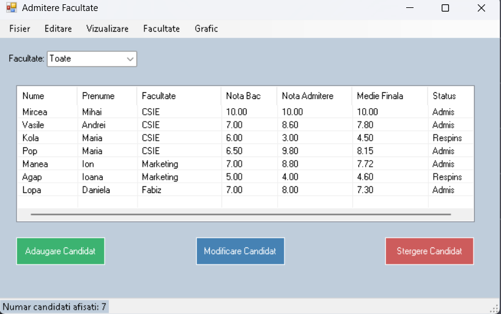
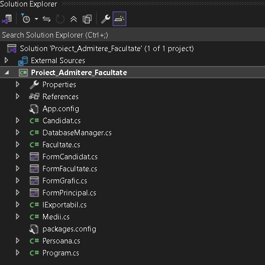
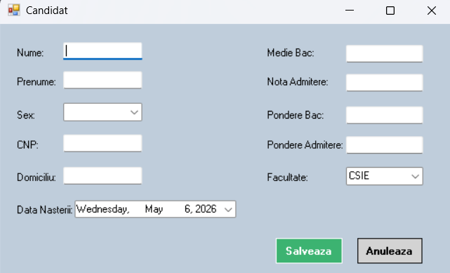
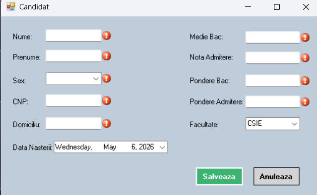
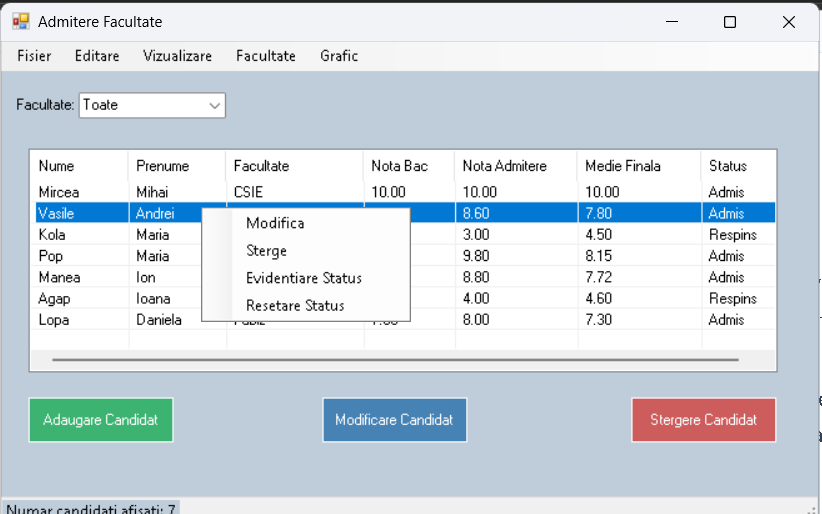
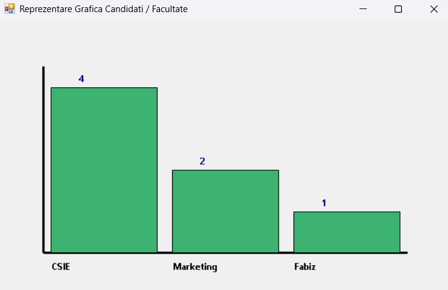
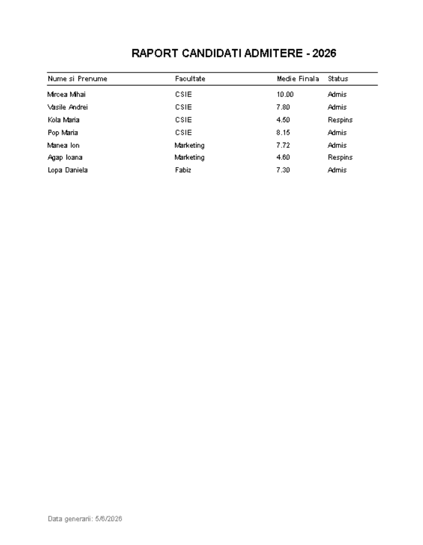
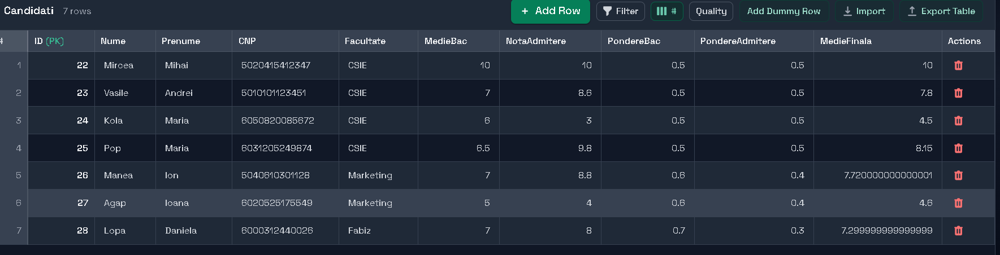
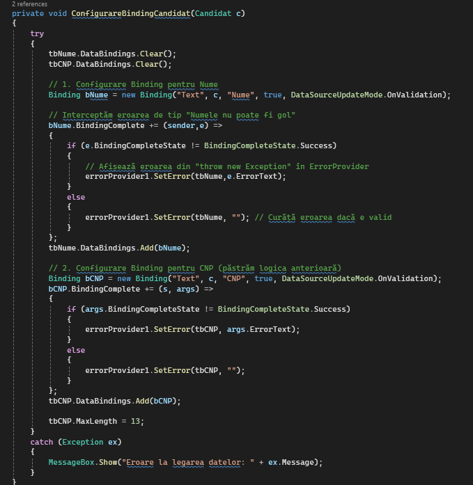
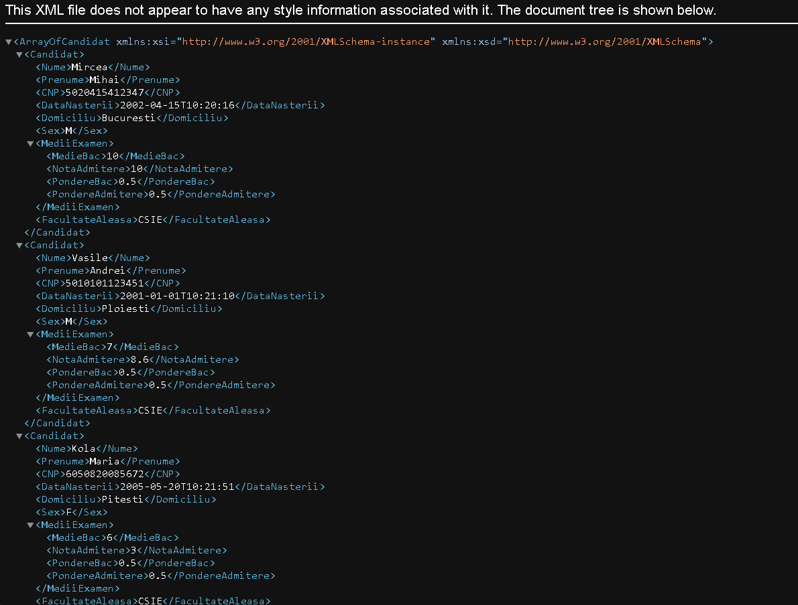

1. Introducere
Aplicația reprezintă un sistem informatic desktop dezvoltat în C# WinForms, destinat gestionării procesului de admitere la nivel universitar. Scopul proiectului este de a digitaliza și automatiza stocarea datelor candidaților, calculul mediilor de admitere pe baza ponderilor și generarea de statistici/rapoarte.

Funcționalități implementate pe baza codului sursă:
- Adăugarea, modificarea și ștergerea (CRUD) candidaților.
- Calculul automat al mediei finale pe baza notei de BAC și a notei de Admitere, fiecare având ponderi configurabile.
- Gestiunea unui nomenclator de facultăți cu o capacitate limitată de locuri.
- Persistența datelor într-o bază de date SQLite (
admitere.db) și operațiuni de import/export în formate TXT, Binar (.dat) și XML. - Generarea unui grafic vectorial (GDI+) pentru distribuția pe facultăți.
- Funcționalitate de imprimare paginată a listei de candidați.
2. Modelarea Aplicației prin Clase
2.1 Clasele domeniului
Sistemul a fost modelat utilizând următoarele clase specifice domeniului, evidențiind moștenirea și implementarea de interfețe:
public abstract class Persoana
{ ... }
public class Candidat : Persoana, ICloneable, IComparable, IExportabil
{ ... }Persoana: Clasă abstractă. Stochează atributele demografice (nume, prenume, sex, CNP, data nașterii, domiciliu) și definește semnătura metodeiObtineStatusAdmitere().Candidat: Moștenește clasaPersoanași implementează interfețeleICloneable,IComparable,IExportabil. Reține asocieri către facultatea aleasă și un obiect de tipMedii.Medii: Clasă care implementeazăICloneableșiIComparable. Încapsulează mediile de BAC, nota de admitere și ponderile lor, plus funcția de calcul a mediei finale.Facultate: Modelează o facultate prindenumire,nrLocuriși menține o colecție de referințe către candidați (List<Candidat> candidati).DatabaseManager: Clasă care conține string-ul de conexiune SQLite și funcțiile pentru interacțiunea cu tabelulCandidati.

2.2 Constructori, proprietăți și încapsulare
Încapsularea a fost implementată prin declararea câmpurilor ca fiind private (ex. private string nume;) și expunerea acestora exclusiv prin proprietăți publice. În interiorul blocurilor set s-a adăugat validarea datelor de intrare (Business Logic).
public string Nume
{
get { return nume; }
set
{
if (string.IsNullOrWhiteSpace(value))
throw new Exception("Numele nu poate fi gol!");
nume = value;
}
}2.3 ICloneable și IComparable
Aceste interfețe sunt implementate complet în cod. Iată exemplul din clasa Candidat:
public object Clone()
{
Candidat clona = new Candidat(Nume, Prenume, Sex, CNP, DataNasterii, Domiciliu,
new Medii(MediiExamen.MedieBac, MediiExamen.NotaAdmitere,
MediiExamen.PondereBac, MediiExamen.PondereAdmitere),
FacultateAleasa);
return clona;
}ICloneable: Implementată înCandidatșiMedii. MetodaClone()returnează o copie profundă a obiectului. Această logică este folosită pentru a edita temporar un candidat înFormCandidatfără a altera referința originală din memorie.IComparable: Implementată înCandidat. Suprascrie metodaCompareToși deleagă comparația cătreMedieCalculata. Este utilizată real în cod prin comandacandidati.Sort().
2.4 Supraîncărcarea operatorilor
În clasa Candidat au fost supraîncărcați trei operatori logici și aritmetici:
public static Candidat operator +(Candidat c, double punctBonus)
{
c.mediiExamen.NotaAdmitere += punctBonus;
return c;
}
public static bool operator >(Candidat c1, Candidat c2)
{
return c1.MedieCalculata > c2.MedieCalculata;
}Aceștia permit acordarea unui punctaj bonus (+) sau compararea clară a doi candidați pentru a afla cine are media mai mare (> și <).
2.5 Indexator
Un indexator de tip double this[int index] a fost implementat în clasa Medii. Utilizează o structură switch pentru a accesa direct atributele. Este folosit intern pentru formula de calcul:
public double CalculeazaMedieFinala()
{
return (this[0] * this[2]) + (this[1] * this[3]);
}2.6 Colecții și foreach
Principalele colecții utilizate sunt List<Candidat> candidati și List<Facultate> facultatiDisponibile. Bucla foreach este implementată repetat pentru popularea ListView, scrierea în fișiere TXT, și calculul valorilor pentru grafic.
2.7 Metode de prelucrare
Pe baza logicii de domeniu, au fost create metode specifice de calcul și decizie:
public override string ObtineStatusAdmitere()
{
return MedieCalculata >= 6.00 ? "Admis" : "Respins";
}2.8 Interfață / clasă abstractă
Clasa Persoana este definită explicit ca abstract class, conținând metoda abstractă ObtineStatusAdmitere(). De asemenea, s-a definit interfața personalizată IExportabil, care impune metoda string Export(), esențială pentru scrierea standardizată în fișierele text.
3. Interfață Grafică
Pe baza codului implementat, interfața grafică este alcătuită din mai multe Form-uri WinForms specializate:
AdmitereFaculate(Main Form): Conține controlul centralListView (lvCandidati)setat pe modul Details. Afișează candidații sub formă de tabel cu coloane (Nume, Medie, Status, etc.). Integrează unComboBox (cmbFac)pentru filtrarea candidaților și unLabelpentru afișarea numărului de înregistrări.FormCandidat: Formular modal deschis pentru Adăugare sau Modificare. Conține controaleTextBox(tbNume, tbCNP, tbMedieBac etc.),ComboBox(cmbSex, cmbFacultate) șiDateTimePicker(dtpDataNasterii). Integrează componentaErrorProviderpentru validare vizuală.FormFacultate: Formular simplu pentru instanțierea unei noi facultăți, conținândTextBox-uri pentru Denumire și Număr de locuri.

4. Validarea Datelor și Fișiere
Validarea Datelor
Validarea folosește componenta ErrorProvider în FormCandidat. Dacă un input nu respectă formatul (ex: Double.TryParse eșuează pentru notă sau CNP-ul nu are 13 cifre), metoda de salvare setează mesajul de eroare alături de controlul afectat:
if (tbCNP.Text.Length != 13 || !tbCNP.Text.All(char.IsDigit))
{
errorProvider1.SetError(tbCNP, "CNP trebuie sa aiba 13 cifre!");
valid = false;
}
Salvare și Restaurare TXT
Implementată folosind StreamWriter și StreamReader. Fiecare obiect Candidat este transformat în string prin apelul metodei Export() (dictată de interfața IExportabil):
public string Export()
{
return $"{Nume}|{Prenume}|{Sex}|{CNP}|{DataNasterii:yyyy-MM-dd}|{Domiciliu}|{MediiExamen.MedieBac}|{MediiExamen.NotaAdmitere}|{MediiExamen.PondereBac}|{MediiExamen.PondereAdmitere}|{FacultateAleasa}";
}Salvare și Restaurare Binară
Implementată prin clasa BinaryFormatter și FileStream (extensia .dat). Aceasta transferă structura completă a obiectului List<Candidat> din memorie către fișier, motiv pentru care toate clasele domeniului sunt precedate de atributul [Serializable].
5. Meniuri
Aplicația dispune de ambele tipuri de meniuri Windows Forms:
- Meniu Principal (MenuStrip): Organizat în categorii. Găzduiește opțiunile de I/O (Export/Import XML, Binar, TXT), opțiuni de printare, gestiune de candidați (Adăugare, Modificare, Ștergere), și instrumente de vizualizare (Sortare după Medie, Afișare grafic, Evidențiere Status).
- Meniu Contextual (ContextMenuStrip): Conectat direct la
lvCandidati. Accesibil prin click-dreapta pe un rând din listă, expune acțiunileModifică,ȘtergeșiEvidențiere Status(ce parcurge lista și colorează rândul cuColor.DarkGreenpentru Admis șiColor.Redpentru Respins).

6. Reprezentare Grafică
Implementată în clasa FormGrafic, aplicația utilizează librăria GDI+ nativă din System.Drawing pentru a desena un grafic cu bare (Bar Chart) în evenimentul panelGrafic_Paint.
Algoritmul extrage numărul de candidați per facultate, stabilește o lățime bazată pe lățimea ferestrei și o înălțime scalată dinamic folosind variabila vScale:
float vScale = (float)(zonaDesen.Height - 2 * margina) / (maxCandidati + 0.5f);
int inaltimeBara = (int)(pereche.Value * vScale);
// Desenare dreptunghi plin
g.FillRectangle(pensulaBare, xBara, yBara, latimeBara, inaltimeBara);
7. Imprimare
Imprimarea fizică este integrată prin controalele PrintDocument și PrintPreviewDialog. Datele (Nume, Facultate, Medie, Status) sunt desenate cu Graphics.DrawString.
Logica de Paginare: Evenimentul PrintPage evaluează poziția verticală yCurent. Dacă depășește limita inferioară (Bottom Margin), execuția pe foaia curentă este suspendată prin e.HasMorePages = true. Motorul Windows generează o foaie nouă și reia scrierea pe baza variabilei de offset candidatCurentIndice.
// Verificam daca mai avem loc pe pagina curenta
if (yCurent + 25 > e.MarginBounds.Bottom)
{
e.HasMorePages = true; // Mai urmeaza o pagina
return;
}
8. Bază de Date
Sistemul folosește baza de date relațională SQLite. Clasa responsabilă este DatabaseManager. La inițializare se execută comanda DDL CREATE TABLE IF NOT EXISTS Candidati. S-a asigurat constrângerea de integritate CNP TEXT UNIQUE.
Operații CRUD Implementate cu Parametri:
string sql = "INSERT INTO Candidati (Nume, Prenume, CNP, Facultate, MedieBac, NotaAdmitere, PondereBac, PondereAdmitere, MedieFinala) VALUES (@n, @p, @cnp, @f, @mb, @na, @pb, @pa, @mf)";
using (var cmd = new SQLiteCommand(sql, conn))
{
cmd.Parameters.AddWithValue("@n", c.Nume);
// ... restul parametrilor
cmd.ExecuteNonQuery();
}Securizarea operațiilor de Inserare și Update (Modificare) utilizează comenzi parametrizate (@n, @cnp), prevenind eficient vulnerabilitățile de tip SQL Injection. Ștergerea se bazează pe CNP (DELETE FROM Candidati WHERE CNP = @cnp).

9. Control Reutilizabil / Data Binding
Control Reutilizabil: Formularul FormCandidat este complet reutilizabil. Parametrul primit în constructor, enum ModForm { Adaugare, Modificare } dictează dacă formularul se deschide gol pentru date noi sau populat pentru editarea unui candidat existent, optimizând codul sursă (DRY).
Data Binding Reactiv: În metoda ConfigurareBindingCandidat a fost legată sursa de date (câmpurile Candidat) la TextBox-uri folosind DataSourceUpdateMode.OnValidation.
Binding bNume = new Binding("Text", c, "Nume", true, DataSourceUpdateMode.OnValidation);
bNume.BindingComplete += (sender, e) =>
{
if (e.BindingCompleteState != BindingCompleteState.Success)
errorProvider1.SetError(tbNume, e.ErrorText); // Afișează iconița roșie trimisă de logica din clasa Candidat
};
10. XML
S-a implementat exportul și importul utilizând clasa nativă XmlSerializer specializată pe tipul colecției: typeof(List<Candidat>).
Exportul transformă instanțele din memorie în elemente XML ierarhice (inclusiv obiectul compozit Medii aflat în clasa Candidat). La importul din XML (Deserialize), aplicația curăță lista și baza de date curentă pentru a preveni duplicatele, reinserază datele recuperate și populează automat dicționarul de facultatiDisponibile dacă fișierul conținea facultăți noi.

11. Analiză Finală
Proiectul demonstrează utilizarea avansată a principiilor OOP și ale platformei .NET WinForms. S-a realizat cu succes separarea logicii aplicației de interfața grafică, validarea robustă prin Data Binding reactiv cu ErrorProvider și persistența datelor prin multiple metode (SQL, Binar, XML, TXT).
Puncte forte
- Integritatea datelor: Combinarea excepțiilor din Domain Model cu evenimentul
BindingCompleteși constrângerileUNIQUEdin baza de date asigură un flux de date curat. - Flexibilitate I/O: Suportul pentru formate multiple de fișiere permite portabilitatea datelor în diverse medii de lucru.
- Prezentare profesională: Paginarea corectă la printare și generarea de grafice independente prin GDI+ oferă o experiență completă utilizatorului final.
Limitări
- Execuție Sincronă: Operațiunile asupra bazei de date se execută sincron pe thread-ul UI, ceea ce poate cauza scurte blocaje vizuale la volume mari de date.
- Persistență Volatilă: Capacitatea totală (numărul de locuri) se stochează momentan doar în memorie, în colecția
facultatiDisponibile, resetându-se la valorile implicite la fiecare restart al aplicației.
Îmbunătățiri posibile
1. Securitate și Etică (Sistem de Autentificare)
- Implementarea unui modul de Login: O îmbunătățire critică ar fi adăugarea unei ferestre de autentificare pentru a restricționa accesul la aplicație.
- Protecția datelor cu caracter personal: Din punct de vedere etic, accesul la informații sensibile (precum CNP-ul candidaților) trebuie limitat strict la personalul autorizat din comisia de admitere, prevenind astfel scurgerile de informații și utilizarea lor neautorizată.
- Criptarea datelor: Stocarea parolelor în baza de date folosind algoritmi de hashing pentru a asigura confidențialitatea utilizatorilor.
2. Optimizarea Performanței (Asincronicitate)
- Conceptul Async/Await: Introducerea procesării asincrone pentru toate procedurile de tip I/O (lucrul cu baza de date SQL, citirea/scrierea fișierelor binar, XML sau TXT).
- Fluiditatea interfeței: Această modificare ar permite interfeței grafice să rămână responsivă (să nu se blocheze) în timpul procesării unor volume mari de date.
3. Arhitectura Bazei de Date (Normalizare)
- Persistența Nomenclatoarelor: Implementarea unui tabel separat numit
Facultatiîn baza de date. - Integritate Relațională: Legarea tabelului de candidați cu cel de facultăți prin intermediul unei Foreign Key (Cheie Externă). Acest lucru ar permite salvarea permanentă a numărului de locuri, eliminând resetarea acestora la valorile implicite după restart.